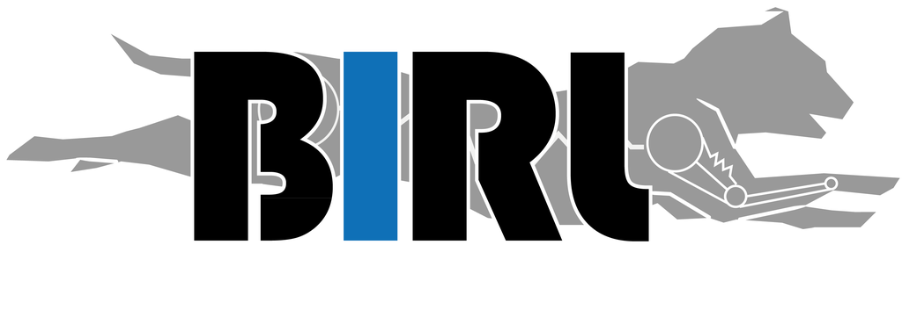

Economy of touch: Task-driven information selection in tactile EIT-based robotic sensing
X. Xu, D. Hardman & F. Iida · Advanced Intelligent Systems
Verified citation; scholarly URL not recorded locally.
BIRL / Publications
Browse recent publications and landmark papers that connect BIRL’s experimental systems to its central scientific questions. Direct DOI links are provided where available.
X. Xu, D. Hardman & F. Iida · Advanced Intelligent Systems
Verified citation; scholarly URL not recorded locally.H. Wang, H. Kunz, T. Adler & F. Iida · IEEE Robotics and Automation Practice
Verified citation; scholarly URL not recorded locally.C. Laschi, L. Wen, F. Iida et al. · Bioinspiration & Biomimetics
Verified citation; scholarly URL not recorded locally.K. Gilday, C. Sirithunge, F. Iida & J. Hughes · Science Robotics
Why it matters: An open parametric hand makes morphology itself accessible for studying embodied manipulation across past and future designs.
Open DOI ↗No publications match your search.